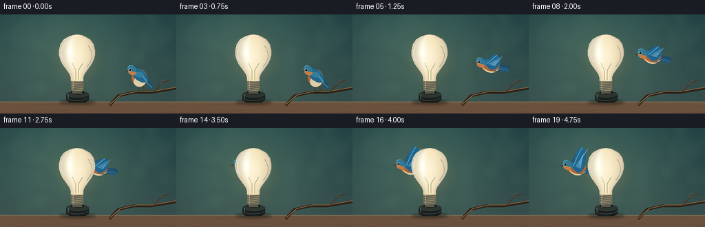
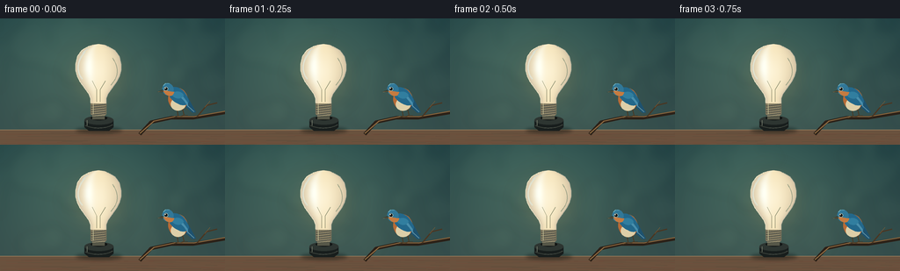

CODING AGENTS AS PIXEL WORLD MODELS
traex/GPT-6.1-Sol · dynamic_spatial_relationship_0043
点击播放 · 原生 RGB 像素
逐轮保存的候选
回放视频、检查图与代码变化。
每份候选均可单独播放。实际图片检查记录在下方工具轨迹中。
候选 01播放与检查图
点击播放 · 原生 RGB 像素


展开代码变化
--- 上一保存版本
+++ 本次保存版本
@@ -0,0 +1,189 @@
+from pathlib import Path
+import math
+import numpy as np
+from PIL import Image, ImageDraw, ImageFilter
+import artifact_io
+
+ROOT=Path(__file__).resolve().parent
+S=4
+W,H=256,144
+rng=np.random.default_rng(7)
+
+def xy(p): return tuple(round(v*S) for v in p)
+def poly(d,p,fill): d.polygon([xy(q) for q in p],fill=fill)
+def line(d,p,fill,width=1): d.line([xy(q) for q in p],fill=fill,width=max(1,round(width*S)),joint='curve')
+def ellipse(d,box,fill,outline=None,width=1): d.ellipse(xy(box),fill=fill,outline=outline,width=max(1,round(width*S)))
+def bezier(points,n=28):
+ a,b,c,e=np.array(points,float)
+ return [tuple((1-t)**3*a+3*(1-t)**2*t*b+3*(1-t)*t*t*c+t**3*e) for t in np.linspace(0,1,n)]
+def shape(d,curves,fill):
+ ps=[]
+ for c in curves: ps+=bezier(c)
+ poly(d,ps,fill)
+
+# A quiet, out-of-focus garden, with a narrow wooden ledge in the foreground.
+y,x=np.mgrid[0:H*S,0:W*S].astype(float); x/=S; y/=S
+v=np.clip(y/144,0,1)
+light=np.exp(-((x-100)**2/(2*85**2)+(y-48)**2/(2*66**2)))
+col=np.stack([29+23*v+30*light,61+14*v+35*light,65+9*v+24*light],axis=-1)
+background=Image.fromarray(np.uint8(np.clip(col,0,255)),'RGB').convert('RGBA')
+bokeh=Image.new('RGBA',background.size);d=ImageDraw.Draw(bokeh)
+for i in range(37):
+ px=float(rng.uniform(-20,276));py=float(rng.uniform(-20,124));r=float(rng.uniform(5,24))
+ ellipse(d,(px-r,py-r,px+r,py+r),(103,135,112,int(rng.uniform(8,26))))
+bokeh=bokeh.filter(ImageFilter.GaussianBlur(5*S));background=Image.alpha_composite(background,bokeh)
+d=ImageDraw.Draw(background)
+poly(d,[(0,127),(256,127),(256,144),(0,144)],(106,82,62,255))
+line(d,[(0,127),(256,127)],(150,123,91,255),.7)
+for i in range(80):
+ yy=float(rng.uniform(130,144)); xx=float(rng.uniform(-10,256)); ll=float(rng.uniform(10,90))
+ line(d,[(xx,yy),(xx+ll,yy+.2)],(int(rng.integers(85,120)),75,57,255),.16)
+# Thin branch gives the bird a clear initial perch.
+branch=Image.new('RGBA',background.size);d=ImageDraw.Draw(branch)
+line(d,[(159,132),(172,118),(195,113),(220,113),(256,107)],(43,33,24,255),4)
+line(d,[(159,131),(175,117),(199,111.7),(220,112),(256,105.8)],(141,105,64,255),1.25)
+line(d,[(224,112),(235,99),(247,96)],(74,54,34,255),1.6)
+line(d,[(233,101),(239,94)],(121,91,54,255),.6)
+background=Image.alpha_composite(background,branch)
+
+# Foreground bulb: a curved opal envelope with volume shading and reflective rim.
+bulb=Image.new('RGBA',background.size)
+bs=np.zeros((H*S,W*S,4),dtype=np.uint8)
+yy,xx=np.mgrid[0:H*S,0:W*S].astype(float);yy/=S;xx/=S
+cx=112
+r=np.interp(yy,[29,30,32,36,43,52,59,66,72,79,86,91,97],[0,7,12,19,24,26,26,24,21,16,11,9,9])
+u=(xx-cx)/np.maximum(r,.01)
+mask=(yy>=29)&(yy<=97)&(np.abs(u)<=1)
+z=np.sqrt(np.clip(1-u*u,0,1))
+shine=np.exp(-((u+.44)/.23)**2)*np.exp(-((yy-53)/23)**2)
+edge=(1-z)
+color=np.stack([246-47*edge+9*shine,228-45*edge+23*shine,185-27*edge+44*shine],axis=-1)
+# Creamy center, illuminated from within, gently cooler edges.
+center=np.exp(-((xx-110)/16)**2-((yy-61)/25)**2)
+color+=np.stack([7*center,14*center,27*center],axis=-1)
+bs[...,:3]=np.uint8(np.clip(color,0,255));bs[...,3]=mask.astype(np.uint8)*255
+bulb=Image.fromarray(bs,'RGBA');d=ImageDraw.Draw(bulb)
+left=[(cx-float(r[int(y0*S),0]),y0) for y0 in np.linspace(31,96,160)]
+right=[(cx+float(r[int(y0*S),0]),y0) for y0 in np.linspace(31,96,160)]
+line(d,left,(255,244,210,230),.65)
+line(d,right,(128,149,139,160),.55)
+line(d,bezier([(97,38),(85,50),(88,64),(94,69)]),(255,252,233,210),1.7)
+line(d,bezier([(100,35),(97,36),(95,38),(94,40)]),(255,255,247,200),1)
+line(d,bezier([(128,45),(138,60),(132,69),(126,76)]),(255,239,195,100),.7)
+# A faint internal stem remains visible through the frosted envelope.
+line(d,[(110,95),(110,81),(105,71)],(207,173,111,70),.6)
+line(d,[(114,95),(114,81),(120,71)],(207,173,111,70),.6)
+# Screw cap and black ceramic socket.
+poly(d,[(103,97),(121,97),(121,109),(117,113),(107,113),(103,109)],(123,115,91,255))
+for k in range(5):
+ y0=98+k*2.65
+ line(d,[(103.5,y0+1.4),(120.3,y0-.5)],(65,69,65,255),1.05)
+ line(d,[(104,y0+.7),(119.5,y0-1)],(219,206,159,255),.55)
+line(d,[(106,97),(106,109)],(238,219,167,180),.75)
+ellipse(d,(96,112,129,125),(26,31,30,255))
+poly(d,[(96,116),(129,116),(129,124),(124,128),(101,128),(96,124)],(24,30,29,255))
+ellipse(d,(96,111,129,121),(45,53,49,255))
+ellipse(d,(103,111,122,116),(17,21,20,255))
+line(d,bezier([(97,122),(105,126),(121,126),(128,121)]),(81,87,76,255),.7)
+line(d,[(99,116),(99,122)],(118,123,108,255),.8)
+# Bulb is inserted into the socket, so keep the cap in front of its top opening.
+poly(d,[(105,110),(119,110),(119,115),(105,115)],(86,87,72,255))
+line(d,[(105,111),(119,110)],(197,185,146,255),.7)
+
+# Soft warm spill surrounding, but never obscuring, the opal bulb.
+glow=Image.new('RGBA',background.size);gd=ImageDraw.Draw(glow)
+ellipse(gd,(76,25,149,105),(253,184,82,24))
+glow=glow.filter(ImageFilter.GaussianBlur(11*S))
+background=Image.alpha_composite(background,glow)
+sh=Image.new('RGBA',background.size);sd=ImageDraw.Draw(sh)
+ellipse(sd,(86,124,139,131),(6,12,9,105));sh=sh.filter(ImageFilter.GaussianBlur(2*S))
+background=Image.alpha_composite(background,sh)
+
+# Naturalistic bluebird, drawn as articulated curved feathers rather than a symbol.
+def bird(px,py,flight,phase,blend=1):
+ layer=Image.new('RGBA',background.size);dd=ImageDraw.Draw(layer)
+ angle=(-.11 if flight else -.16)
+ def p(q):
+ a,b=q;return (px+a*math.cos(angle)-b*math.sin(angle),py+a*math.sin(angle)+b*math.cos(angle))
+ def ln(q,c,w=1): line(dd,[p(t) for t in q],c,w)
+ def pg(q,c): poly(dd,[p(t) for t in q],c)
+ def curve(cs,c): shape(dd,[[p(t) for t in q] for q in cs],c)
+ def el(box,c,outline=None,width=1):
+ # Sample an ellipse so all the body details follow the body angle.
+ x0,y0,x1,y1=box
+ qs=[p(((x0+x1)/2+(x1-x0)/2*math.cos(t),(y0+y1)/2+(y1-y0)/2*math.sin(t))) for t in np.linspace(0,math.tau,60)]
+ poly(dd,qs,c)
+ if outline: line(dd,qs+[qs[0]],outline,width)
+ if flight:
+ flap=math.sin(phase)
+ # Far wing, slightly desaturated and shorter, behind the body.
+ tip=(10,-9-23*max(flap,0)+17*max(-flap,0))
+ curve([[(-7,-2),(-10,-10),(tip[0]-7,tip[1]),tip],
+ [tip,(tip[0]+11,tip[1]+5),(12,4),(4,5)],
+ [(4,5),(-1,6),(-5,3),(-7,-2)]],(38,85,109,255))
+ # Split feathered tail, pointing backward along the trajectory.
+ pg([(7,0),(27,4),(28,9),(11,7)],(25,73,106,255))
+ pg([(9,3),(26,10),(24,13),(7,8)],(32,88,122,255))
+ for k in range(3): ln([(12,3+k*1.8),(25,6+k*2)],(94,145,164,255),.45)
+ el((-13,-6,13,9),(177,101,52,255))
+ curve([[(-12,0),(-7,9),(3,12),(12,6)],[(12,6),(7,13),(-8,14),(-12,0)]],(226,212,170,255))
+ el((-13,-9,9,1),(40,114,150,255))
+ # Near wing with individually tapered primary feathers.
+ up=flap
+ tipy=-7-28*max(up,0)+24*max(-up,0)
+ tipx=11+6*max(-up,0)
+ curve([[(-5,-3),(-4,tipy*.6),(7,tipy-3),(tipx,tipy)],
+ [(tipx,tipy),(tipx+9,tipy+5),(13,7),(2,7)],
+ [(2,7),(-2,7),(-7,1),(-5,-3)]],(31,101,143,255))
+ for k in range(7):
+ root=(-2+k*1.2,-2+k*.6)
+ dest=(tipx+8-k*1.8,tipy+3+k*1.6)
+ ln([root,((root[0]+dest[0])*.55,(root[1]+dest[1])*.55),dest],(88+3*k,151+2*k,180+2*k,255),.7)
+ ln([(-5,-3),(2,tipy*.55),(tipx,tipy)],(90,169,198,255),1)
+ # Feet tuck tightly toward the belly.
+ ln([(0,8),(6,10),(9,9)],(85,62,37,255),.75)
+ ln([(4,8),(9,10),(12,9)],(85,62,37,255),.65)
+ hx,hy=-13,-6
+ else:
+ # Tail and feet sit naturally above the branch.
+ pg([(3,7),(14,20),(18,20),(12,3)],(30,82,111,255))
+ ln([(8,9),(16,19)],(96,145,162,255),.7)
+ ln([(-3,11),(-3,21),(-9,22)],(75,57,35,255),.9)
+ ln([(-3,21),(2,22)],(75,57,35,255),.7)
+ ln([(3,11),(4,21),(0,22)],(75,57,35,255),.9)
+ ln([(4,21),(8,22)],(75,57,35,255),.65)
+ el((-11,-11,11,15),(183,107,55,255))
+ el((-9,0,8,15),(221,207,168,255))
+ curve([[(-10,-9),(-3,-17),(8,-10),(11,1)],[(11,1),(15,11),(5,12),(-1,7)],[(-1,7),(-7,3),(-10,-3),(-10,-9)]],(35,104,139,255))
+ for k in range(6):
+ ln([(1+k*.9,-4+k*.6),(7+k*.6,5+k*.6),(9+k*.2,9+k*.7)],(73,142,171,255),.65)
+ curve([[(-7,-5),(-1,-9),(7,-6),(7,-1)],[(7,-1),(3,3),(-3,2),(-7,-5)]],(49,126,159,255))
+ hx,hy=-8,-11
+ # Face, crown, chest and tiny specular eye.
+ el((hx-8,hy-7,hx+5,hy+7),(49,119,151,255))
+ curve([[(hx-7,hy+1),(hx-5,hy+9),(hx+4,hy+10),(hx+5,hy+4)],[(hx+5,hy+4),(hx+2,hy+4),(hx-2,hy+1),(hx-7,hy+1)]],(198,123,64,255))
+ ln([(hx-6,hy-5),(hx-3,hy-7),(hx+1,hy-6)],(108,177,193,255),.7)
+ el((hx-5.8,hy-3,hx-1.3,hy+1.4),(210,218,196,255))
+ el((hx-5.25,hy-2.6,hx-1.75,hy+.9),(12,21,23,255))
+ el((hx-4.6,hy-2.2,hx-3.65,hy-1.25),(255,255,240,255))
+ pg([(hx-7,hy-.5),(hx-14,hy+1),(hx-7,hy+2.4)],(54,55,42,255))
+ ln([(hx-13,hy+1),(hx-7,hy+1)],(175,155,111,255),.4)
+ return layer
+
+frames=[]
+for i in range(20):
+ if i<=3:
+ px,py=202,90+math.sin(i*.7)*.3
+ b=bird(px,py,False,0)
+ else:
+ t=(i-4)/15
+ # Takeoff to the left, followed by a shallow horizontal flight behind the bulb.
+ px=202-132*(t*t*(3-2*t))
+ py=90-32*(1-math.exp(-t*11))+1.1*math.sin(t*math.tau)
+ b=bird(px,py,True,(i-4)*2.1+.8)
+ im=Image.alpha_composite(background,b)
+ # Critical depth ordering: the opaque foreground envelope occludes bird and wings.
+ im=Image.alpha_composite(im,bulb)
+ im=im.convert('RGB').resize((W,H),Image.Resampling.LANCZOS)
+ frames.append(np.asarray(im,dtype=np.uint8))
+artifact_io.save(np.stack(frames),ROOT)
可观测工具轨迹
实际执行的命令与返回图片。
命令 1exit 0
/bin/bash -lc "ls -la && cat prompt.txt && printf '\\n---RULES---\\n' && cat GENERATION_RULES.md && printf '\\n---SPEC---\\n' && cat task_spec.json"
命令 2exit 0
/bin/bash -lc "cat artifact_io.py && printf '\\n---\\n' && ls -la .tmp"
命令 3exit 0
/bin/bash -lc "cat > generate.py <<'PY'
from pathlib import Path
import math
import numpy as np
from PIL import Image, ImageDraw, ImageFilter
import artifact_io
ROOT=Path(__file__).resolve().parent
S=4
W,H=256,144
rng=np.random.default_rng(7)
def xy(p): return tuple(round(v*S) for v in p)
def poly(d,p,fill): d.polygon([xy(q) for q in p],fill=fill)
def line(d,p,fill,width=1): d.line([xy(q) for q in p],fill=fill,width=max(1,round(width*S)),joint='curve')
def ellipse(d,box,fill,outline=None,width=1): d.ellipse(xy(box),fill=fill,outline=outline,width=max(1,round(width*S)))
def bezier(points,n=28):
a,b,c,e=np.array(points,float)
return [tuple((1-t)**3*a+3*(1-t)**2*t*b+3*(1-t)*t*t*c+t**3*e) for t in np.linspace(0,1,n)]
def shape(d,curves,fill):
ps=[]
for c in curves: ps+=bezier(c)
poly(d,ps,fill)
# A quiet, out-of-focus garden, with a narrow wooden ledge in the foreground.
y,x=np.mgrid[0:H*S,0:W*S].astype(float); x/=S; y/=S
v=np.clip(y/144,0,1)
light=np.exp(-((x-100)**2/(2*85**2)+(y-48)**2/(2*66**2)))
col=np.stack([29+23*v+30*light,61+14*v+35*light,65+9*v+24*light],axis=-1)
background=Image.fromarray(np.uint8(np.clip(col,0,255)),'RGB').convert('RGBA')
bokeh=Image.new('RGBA',background.size);d=ImageDraw.Draw(bokeh)
for i in range(37):
px=float(rng.uniform(-20,276));py=float(rng.uniform(-20,124));r=float(rng.uniform(5,24))
ellipse(d,(px-r,py-r,px+r,py+r),(103,135,112,int(rng.uniform(8,26))))
bokeh=bokeh.filter(ImageFilter.GaussianBlur(5*S));background=Image.alpha_composite(background,bokeh)
d=ImageDraw.Draw(background)
poly(d,[(0,127),(256,127),(256,144),(0,144)],(106,82,62,255))
line(d,[(0,127),(256,127)],(150,123,91,255),.7)
for i in range(80):
yy=float(rng.uniform(130,144)); xx=float(rng.uniform(-10,256)); ll=float(rng.uniform(10,90))
line(d,[(xx,yy),(xx+ll,yy+.2)],(int(rng.integers(85,120)),75,57,255),.16)
# Thin branch gives the bird a clear initial perch.
branch=Image.new('RGBA',background.size);d=ImageDraw.Draw(branch)
line(d,[(159,132),(172,118),(195,113),(220,113),(256,107)],(43,33,24,255),4)
line(d,[(159,131),(175,117),(199,111.7),(220,112),(256,105.8)],(141,105,64,255),1.25)
line(d,[(224,112),(235,99),(247,96)],(74,54,34,255),1.6)
line(d,[(233,101),(239,94)],(121,91,54,255),.6)
background=Image.alpha_composite(background,branch)
# Foreground bulb: a curved opal envelope with volume shading and reflective rim.
bulb=Image.new('RGBA',background.size)
bs=np.zeros((H*S,W*S,4),dtype=np.uint8)
yy,xx=np.mgrid[0:H*S,0:W*S].astype(float);yy/=S;xx/=S
cx=112
r=np.interp(yy,[29,30,32,36,43,52,59,66,72,79,86,91,97],[0,7,12,19,24,26,26,24,21,16,11,9,9])
u=(xx-cx)/np.maximum(r,.01)
mask=(yy>=29)&(yy<=97)&(np.abs(u)<=1)
z=np.sqrt(np.clip(1-u*u,0,1))
shine=np.exp(-((u+.44)/.23)**2)*np.exp(-((yy-53)/23)**2)
edge=(1-z)
color=np.stack([246-47*edge+9*shine,228-45*edge+23*shine,185-27*edge+44*shine],axis=-1)
# Creamy center, illuminated from within, gently cooler edges.
center=np.exp(-((xx-110)/16)**2-((yy-61)/25)**2)
color+=np.stack([7*center,14*center,27*center],axis=-1)
bs[...,:3]=np.uint8(np.clip(color,0,255));bs[...,3]=mask.astype(np.uint8)*255
bulb=Image.fromarray(bs,'RGBA');d=ImageDraw.Draw(bulb)
left=[(cx-float(r[int(y0*S),0]),y0) for y0 in np.linspace(31,96,160)]
right=[(cx+float(r[int(y0*S),0]),y0) for y0 in np.linspace(31,96,160)]
line(d,left,(255,244,210,230),.65)
line(d,right,(128,149,139,160),.55)
line(d,bezier([(97,38),(85,50),(88,64),(94,69)]),(255,252,233,210),1.7)
line(d,bezier([(100,35),(97,36),(95,38),(94,40)]),(255,255,247,200),1)
line(d,bezier([(128,45),(138,60),(132,69),(126,76)]),(255,239,195,100),.7)
# A faint internal stem remains visible through the frosted envelope.
line(d,[(110,95),(110,81),(105,71)],(207,173,111,70),.6)
line(d,[(114,95),(114,81),(120,71)],(207,173,111,70),.6)
# Screw cap and black ceramic socket.
poly(d,[(103,97),(121,97),(121,109),(117,113),(107,113),(103,109)],(123,115,91,255))
for k in range(5):
y0=98+k*2.65
line(d,[(103.5,y0+1.4),(120.3,y0-.5)],(65,69,65,255),1.05)
line(d,[(104,y0+.7),(119.5,y0-1)],(219,206,159,255),.55)
line(d,[(106,97),(106,109)],(238,219,167,180),.75)
ellipse(d,(96,112,129,125),(26,31,30,255))
poly(d,[(96,116),(129,116),(129,124),(124,128),(101,128),(96,124)],(24,30,29,255))
ellipse(d,(96,111,129,121),(45,53,49,255))
ellipse(d,(103,111,122,116),(17,21,20,255))
line(d,bezier([(97,122),(105,126),(121,126),(128,121)]),(81,87,76,255),.7)
line(d,[(99,116),(99,122)],(118,123,108,255),.8)
# Bulb is inserted into the socket, so keep the cap in front of its top opening.
poly(d,[(105,110),(119,110),(119,115),(105,115)],(86,87,72,255))
line(d,[(105,111),(119,110)],(197,185,146,255),.7)
# Soft warm spill surrounding, but never obscuring, the opal bulb.
glow=Image.new('RGBA',background.size);gd=ImageDraw.Draw(glow)
ellipse(gd,(76,25,149,105),(253,184,82,24))
glow=glow.filter(ImageFilter.GaussianBlur(11*S))
background=Image.alpha_composite(background,glow)
sh=Image.new('RGBA',background.size);sd=ImageDraw.Draw(sh)
ellipse(sd,(86,124,139,131),(6,12,9,105));sh=sh.filter(ImageFilter.GaussianBlur(2*S))
background=Image.alpha_composite(background,sh)
# Naturalistic bluebird, drawn as articulated curved feathers rather than a symbol.
def bird(px,py,flight,phase,blend=1):
layer=Image.new('RGBA',background.size);dd=ImageDraw.Draw(layer)
angle=(-.11 if flight else -.16)
def p(q):
a,b=q;return (px+a*math.cos(angle)-b*math.sin(angle),py+a*math.sin(angle)+b*math.cos(angle))
def ln(q,c,w=1): line(dd,[p(t) for t in q],c,w)
def pg(q,c): poly(dd,[p(t) for t in q],c)
def curve(cs,c): shape(dd,[[p(t) for t in q] for q in cs],c)
def el(box,c,outline=None,width=1):
# Sample an ellipse so all the body details follow the body angle.
x0,y0,x1,y1=box
qs=[p(((x0+x1)/2+(x1-x0)/2*math.cos(t),(y0+y1)/2+(y1-y0)/2*math.sin(t))) for t in np.linspace(0,math.tau,60)]
poly(dd,qs,c)
if outline: line(dd,qs+[qs[0]],outline,width)
if flight:
flap=math.sin(phase)
# Far wing, slightly desaturated and shorter, behind the body.
tip=(10,-9-23*max(flap,0)+17*max(-flap,0))
curve([[(-7,-2),(-10,-10),(tip[0]-7,tip[1]),tip],
[tip,(tip[0]+11,tip[1]+5),(12,4),(4,5)],
[(4,5),(-1,6),(-5,3),(-7,-2)]],(38,85,109,255))
# Split feathered tail, pointing backward along the trajectory.
pg([(7,0),(27,4),(28,9),(11,7)],(25,73,106,255))
pg([(9,3),(26,10),(24,13),(7,8)],(32,88,122,255))
for k in range(3): ln([(12,3+k*1.8),(25,6+k*2)],(94,145,164,255),.45)
el((-13,-6,13,9),(177,101,52,255))
curve([[(-12,0),(-7,9),(3,12),(12,6)],[(12,6),(7,13),(-8,14),(-12,0)]],(226,212,170,255))
el((-13,-9,9,1),(40,114,150,255))
# Near wing with individually tapered primary feathers.
up=flap
tipy=-7-28*max(up,0)+24*max(-up,0)
tipx=11+6*max(-up,0)
curve([[(-5,-3),(-4,tipy*.6),(7,tipy-3),(tipx,tipy)],
[(tipx,tipy),(tipx+9,tipy+5),(13,7),(2,7)],
[(2,7),(-2,7),(-7,1),(-5,-3)]],(31,101,143,255))
for k in range(7):
root=(-2+k*1.2,-2+k*.6)
dest=(tipx+8-k*1.8,tipy+3+k*1.6)
ln([root,((root[0]+dest[0])*.55,(root[1]+dest[1])*.55),dest],(88+3*k,151+2*k,180+2*k,255),.7)
ln([(-5,-3),(2,tipy*.55),(tipx,tipy)],(90,169,198,255),1)
# Feet tuck tightly toward the belly.
ln([(0,8),(6,10),(9,9)],(85,62,37,255),.75)
ln([(4,8),(9,10),(12,9)],(85,62,37,255),.65)
hx,hy=-13,-6
else:
# Tail and feet sit naturally above the branch.
pg([(3,7),(14,20),(18,20),(12,3)],(30,82,111,255))
ln([(8,9),(16,19)],(96,145,162,255),.7)
ln([(-3,11),(-3,21),(-9,22)],(75,57,35,255),.9)
ln([(-3,21),(2,22)],(75,57,35,255),.7)
ln([(3,11),(4,21),(0,22)],(75,57,35,255),.9)
ln([(4,21),(8,22)],(75,57,35,255),.65)
el((-11,-11,11,15),(183,107,55,255))
el((-9,0,8,15),(221,207,168,255))
curve([[(-10,-9),(-3,-17),(8,-10),(11,1)],[(11,1),(15,11),(5,12),(-1,7)],[(-1,7),(-7,3),(-10,-3),(-10,-9)]],(35,104,139,255))
for k in range(6):
ln([(1+k*.9,-4+k*.6),(7+k*.6,5+k*.6),(9+k*.2,9+k*.7)],(73,142,171,255),.65)
curve([[(-7,-5),(-1,-9),(7,-6),(7,-1)],[(7,-1),(3,3),(-3,2),(-7,-5)]],(49,126,159,255))
hx,hy=-8,-11
# Face, crown, chest and tiny specular eye.
el((hx-8,hy-7,hx+5,hy+7),(49,119,151,255))
curve([[(hx-7,hy+1),(hx-5,hy+9),(hx+4,hy+10),(hx+5,hy+4)],[(hx+5,hy+4),(hx+2,hy+4),(hx-2,hy+1),(hx-7,hy+1)]],(198,123,64,255))
ln([(hx-6,hy-5),(hx-3,hy-7),(hx+1,hy-6)],(108,177,193,255),.7)
el((hx-5.8,hy-3,hx-1.3,hy+1.4),(210,218,196,255))
el((hx-5.25,hy-2.6,hx-1.75,hy+.9),(12,21,23,255))
el((hx-4.6,hy-2.2,hx-3.65,hy-1.25),(255,255,240,255))
pg([(hx-7,hy-.5),(hx-14,hy+1),(hx-7,hy+2.4)],(54,55,42,255))
ln([(hx-13,hy+1),(hx-7,hy+1)],(175,155,111,255),.4)
return layer
frames=[]
for i in range(20):
if i<=3:
px,py=202,90+math.sin(i*.7)*.3
b=bird(px,py,False,0)
else:
t=(i-4)/15
# Takeoff to the left, followed by a shallow horizontal flight behind the bulb.
px=202-132*(t*t*(3-2*t))
py=90-32*(1-math.exp(-t*11))+1.1*math.sin(t*math.tau)
b=bird(px,py,True,(i-4)*2.1+.8)
im=Image.alpha_composite(background,b)
# Critical depth ordering: the opaque foreground envelope occludes bird and wings.
im=Image.alpha_composite(im,bulb)
im=im.convert('RGB').resize((W,H),Image.Resampling.LANCZOS)
frames.append(np.asarray(im,dtype=np.uint8))
artifact_io.save(np.stack(frames),ROOT)
PY
python generate.py"命令 4exit 0
/bin/bash -lc "python - <<'PY'
import numpy as np
from pathlib import Path
p=np.load('pixels.npz')['pixels']
print('Saved RGB video:',p.shape,'| 20 frames, 256Ã144, 4 fps')
print('Artifacts:',', '.join(str(q) for q in [Path('generate.py'),Path('pixels.npz'),Path('index.html'),Path('inspection.png')] if q.is_file()))
PY"视觉工具实际返回图片 1

保存候选 1 份；完成命令 4 次；可验证图片返回 1 张。原始 API 响应与完整日志保留在本地。